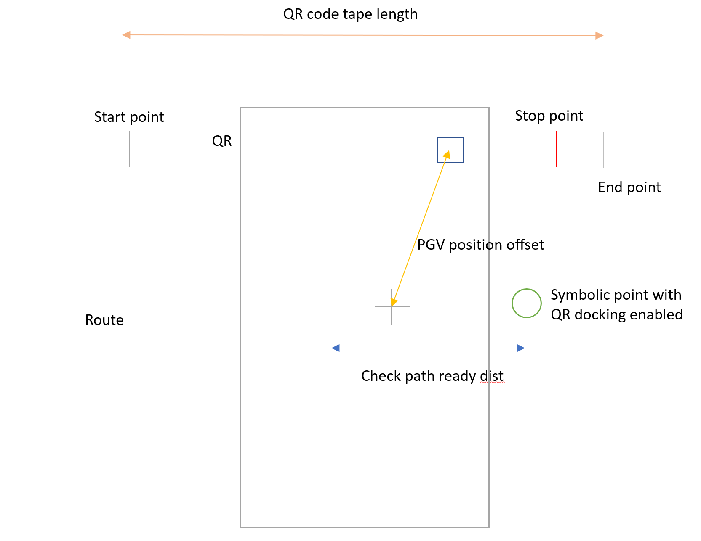
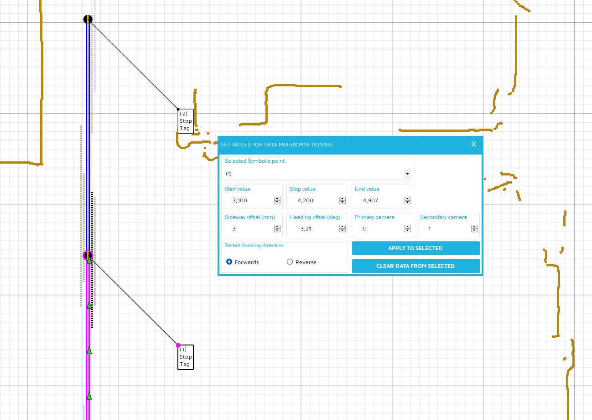
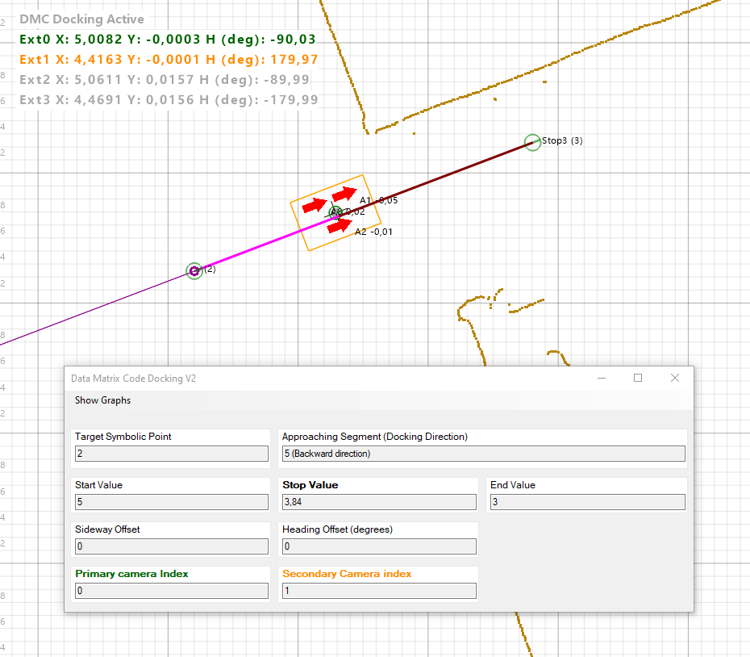
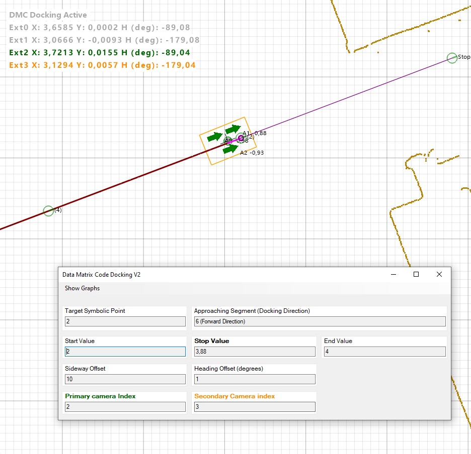

Data Matrix Code (DMC) Docking V2
Updated 29.04.2024
Overview
Introduction
In context of External localization, Data matrix docking is a separate feature that requires its own license. The idea is to use the data matrix tape for line following only. This means that data matrices are not taught to the environment nor will their exact position on the map be known. Instead, symbolic points on the route network will hold the needed information about the data matrix lines.
In short, the AGV is given a drive order to a destination symbolic point which has data matrix information defined. When the AGV is close enough to the symbolic point and receives a valid measurement from the PGV camera, it goes to a docking state and uses from here on the data matrix code / QR code line as a reference for the drive. This means that the AGV will correct its position to the center of data matrix line and simultaneously correct it's heading to be aligned with the line.
The AGV will stop based on a predefined stopping values on the data matrix tape. After it gets a drive order to leave the location, it will follow the data matrix tape until the primary sensor is far enough from the symbolic point (configurable). The feature provides accurate docking since the cameras can provide sub millimeter X,Y position on the data matrix.
The DMC Docking V2 is an improved version of the old Data Matrix docking. The improved version provides the means for:
- Docking to a same symbolic point forward and backward
- Docking to a symbolic point that is middle of the route
- Docking to a symbolic point from all directions
- Docking with DMC line ascending and descending values
- Choosing active PGV cameras to be used when docking
- Possibility to use 4 PGV cameras
DMC Docking V2 is available in Navitrol 6.48 Official Release
Requirements
Hardware requirements for the feature include Position Guided Vision sensor(s) and Data matrix code tape from Pepperl+Fuchs. Navitrol can read data directly from sensors using CAN Open. For other type of sensors, the customer is required to read the data from the sensors and send the data to Navitrol via Ethernet TCP/IP connection (see Appendix).
Note: From Navitrol 6.32 onwards, two cameras can be mounted also to the left and right side of navigation point.
Limitations
The DMC docking has following limitations for its configuration:
- The Data matrix tapes cannot cross each others.
- AGV can follow only one QR-code line at a time.
- The route should be straight and without branches whenever the AGV is following the data matrix tape.
- Symbolic point must have DMC docking enabled. In addition, symbolic point must be placed so that it is close to the location that the AGV is needed to be stopped. Maximum allowed distance is 0.1 meters.
- If AGV has restarted or driven manually closer than "Check path ready" distance from the symbolic point, The DMC docking does not activate in following situations:
- If route is forward or reverse only
- Data matrix docking stop point is defined only to be approached from one direction and starting to drive to the other side of the symbolic point
- Drive order to the same symbolic point where AGV already docked not possible if AGV would approach the same segment (i.e. a loop). AGV should be given drive order to somewhere else first.
- When testing with Navitrol Monitor, disable fleet control since it can cause problems (I, fleet_control_type, 0)
AGV can follow only one data matrix line at a time, but there can be one or two PGV cameras used for driving. However, only the PGV camera that is configured as primary camera will be used for stopping the AGV. The other (secondary camera) is used only for alignment with respect to data matrix line.
Dependencies
Setup
Quick start
- Configure and calibrate the PGV cameras
- Create straight routes and symbolic points along the DMC lines
- Define stopping points for these symbolic points (Configuration)
- Give a drive order to the symbolic point along the route DMC docking was configured
Required parameters
| Name | Type | Required value | Description |
|---|---|---|---|
| ext_loc_docking_enabled | Int | 1 | Enable docking 0 = Disabled 1 = Enabled |
| ext_loc_docking_version | Int | 2 | Data matrix code (DMC) Docking version. 1 = Version 1 (V1) 2 = Version 2 (V2) |
| ext_loc_stop_point_enabled | Int | 1 | Stop point is given in data matrix coordinates for sensor (X-position) instead of driving to route end position. Needs to be enabled with DMC docking. 0 = Disabled 1 = Enabled |
| ext_loc_for_pos_ctrl_mode | Int | 1-3 | External localization used directly for position control (e.g. in case of line following) 0 = disabled 1 = using only one sensor 2 = using two sensors when applicable 3 = require always two sensors (Navitrol 6.32 onwards) |
| ext_loc_max_dist_since_last_meas | Float | 0.01 - 1.0 | Maximum travelled distance since last valid measurement when inside external localization area |
| ext_loc_check_path_ready_dist | Float | 0.01 - 0.2 | Distance from stop point inside of which the stopping check starts. After drive is ready and before next stop can be checked, a measurement must be outside of this distance from stop value. |
| ext_loc_strict_max_dist_since_last_meas | Float | 0.01 - 0.5 | Maximum distance in meters since last valid measurement when data matrix following is active and the AGV inside "Check path ready dist" |
| ext_loc_path_ready_max_dist_err | Float | 0.0001 - 0.2 | Max distance between PGV measurement and stop point to determine drive to be instantly ready at the start of new drive order. |
| ext_loc_docking_max_h_err_deg | Float | 0.5 - 180.0 | Maximum heading error in degrees to the target heading when data matrix line follow is active |
| CANOpen Communication parameters | |||
| pgv_enabled | Uint | 1 | PGV sensor enabled (CAN only) |
| pgv_can_node_id[0...3] | Int | 1-127 | CAN node ID of camera |
| pgv_model[0...3] | Int | 0 | 0 = default 1 = safePGV |
Optional parameters
| Name | Type | Default value | Description |
|---|---|---|---|
| ext_loc_x_offset[0...3] | Float | 0.0 | Nominal X offset from the navigation point to sensor in machine coordinate system, positive forwards |
| ext_loc_y_offset[0...3] | Float | 0.0 | Nominal Y offset from the navigation point to sensor in machine coordinate system, positive to the left |
| ext_loc_h_offset_deg[0...3] | Float | 0.0 | Nominal heading offset between machine coordinate system and sensor coordinate system, positive CCW |
| pgv_x_offset[0...3] | Float | 0.0 | X-offset in meters from nominal position, only small correction values |
| pgv_y_offset[0...3] | Float | 0.0 | Y-offset in meters from nominal position, only small correction values |
| pgv_angle_offset_deg[0...3] | Float | 0.0 | Angle offset in degrees from nominal heading |
| ext_loc_pos_ctrl_dist_err_only | Int | 0 | Position control option to use only distance error from line, when just one sensor is reading the data matrix. Intended for non-omni type vehicles that have sensor(s) outside of navigation point (Navitrol 6.32 onwards). |
| ext_loc_heading_filt_alpha | Float | 1.0 | Filtering gain for heading measurement from sensor (0.1 -- 1.0) |
| ext_loc_pid_heading_p | Float | 0.0 | Position control gain for heading when external localization is active <= 0.1 use normal pc_pid values<br>> 0.1 use this parameter |
| ext_loc_pid_dist_p | Float | 0.0 | Position control gain for distance when external localization is active <= 0.1 use normal pc_pid values<br>> 0.1 use this parameter |
| ext_loc_stop_distance_offset | Float | 0.0 | Additional offset for stopping (pc_stop_distance_offset in general use) on data matrix. Positive value if the AGV stops too early. |
| ext_loc_stop_point_min_agv_dist_from_sp | Float | 0.5 | AGV needs to be within this distance from the target symbolic point to start checking for the stop point |
| pgv_max_missing_msg | Int | 5 | Number of missing messages for error to be triggered (Ethernet only) |
| pgv_cam_res_x | Float | 0.0001 | The x-axis resolution of the PGV cameras in meters |
| pgv_cam_res_y | Float | 0.0001 | The y-axis resolution of the PGV cameras in meters |
| pgv_cam_res_h | Float | 0.1 | The heading resolution (deg) of the PGV cameras |
| Ethernet Communication parameters if CanOpen not used | |||
| ext_loc_eth_model[0...3] | Int | -1 | Linefollowing config for ethernet comms -1 = disabled 0 = PGV |
| ext_loc_eth_protocol[0...3] | Int | 2 | 1 = Stream 2 = DGRAM |
| ext_loc_eth_port[0...3] | Int | 5333 | Linefollowing port |
| ext_loc_eth_swap_bytes | Int | 0 | 0 = little endian 1 = big endian |
Example parameters to get started for two PGV (CAN Open) cameras
| Parameter | Value |
|---|---|
| I,ext_loc_docking_enabled, | 1 # Data matrix docking enabled |
| I,ext_loc_docking_version, | 2 # Data matrix docking V2 active |
| I,ext_loc_stop_point_enabled | 1 |
| F,ext_loc_x_offset[0], | 0.5 |
| F,ext_loc_y_offset[0], | 0.0 |
| F,ext_loc_h_offset_deg[0], | 0.0 |
| F,ext_loc_x_offset[1], | -0.5 |
| F,ext_loc_y_offset[1], | 0.0 |
| F,ext_loc_h_offset_deg[1], | 0.0 |
| I,ext_loc_for_pos_ctrl_mode, | 2 |
| F,ext_loc_heading_filt_alpha, | 0.3 |
| U, pgv_enabled, | 1 |
| I,pgv_can_node_id[0], | 3 |
| I,pgv_can_node_id[1], | 4 |
| F, pgv_x_offset[0], | 0.0 |
| F,pgv_y_offset[0], | 0.0 |
| F,pgv_x_offset[1], | 0.0 |
| F,pgv_y_offset[1], | 0.0 |
| F,pgv_angle_offset_deg[0], | 90.0 |
| F,pgv_angle_offset_deg[1], | -90.0 |
How to use
Configuration
In Navithor Tools, symbolic point should be filled with the data matrix tape information. These include
-
Selected symbolic point and approaching segment: The approaching segment needs to be selected for each docking direction separately
- If you want to dock from different directions relative to symbolic point you must define all these cases separately
-
Docking direction: Forward or Backward. This defines the direction with which the AGV docks the symbolic point.
-
Start point: Starting value defines
- The first value read from the DMC tape when approaching docking location
- The last value when leaving docking location the same route.
-
End point: Defines the last value read from the DMC tape when leaving docking location over the docking symbolic point.
-
Stop point (X-coordinate): Stop point will trigger stopping of the AGV. It is incorporated with stopping offsets (pc_stop_distance_offset & ext_loc_stop_distance_offset) for targeting that PGV reading would be close to the stop point value at the end.
-
Sideway offset: The offset in Y direction wrt the AGV forward driving direction. If AGV drives forward normally, the sideway offset is positive to the left. This will offset the center of the camera by this value from the tape. Thus, a positive sideway offset will drive the AGV to the left side from the route heading.
-
Heading offset: Defines the heading offset with which to drive the DMC tape. Allowed range [-10, 10] degrees. Positive heading offset will drive the AGV rotated to counter-clockwise direction. Offsets should be kept small.
-
Primary Camera: The index of the primary camera used for DMC position control and for stopping to the defined X-coordinate Stop-point. Primary camera index needs to be always defined as the AGV is stopped based on the primary camera to the defined stopping point.
- Indexes match to parameters:
- PGV:s defined with CanOpen: pgv_can_node_id[index]
- PGV:s defined with Ethernet communication: ext_loc_eth_model[index]
- Indexes match to parameters:
- Secondary Camera: Defines the index of the secondary camera used for DMC position control. Only used for Y-directional (perpendicular direction with respect to the DMC line) and heading corrections.

Docking configuration

DMC line configuration for symbolic point on Navithor Tools
Logic and error detection
Main logic
When the AGV is approaching the symbolic point that has data matrix values defined, it will change the driving reference point from route to data matrix line as soon as following conditions are met:
-
PGV:s primary X-measurement is between defined start and end point.
- If parameter ext_loc_for_pos_ctrl_mode is set to 3, then both primary and secondary camera X-measurements need to be between start and end point.
-
Distance along the route between the AGV and symbolic point is less than data matrix length + small tolerance (0.4m)
-
Heading of the AGV relative to the tape is close enough to the target heading (parameter ext_loc_docking_max_h_err_deg).
Once the AGV changes to follow data matrix line, it will not switch to follow route in the same drive order anymore.
The AGV starts to calculate when to stop after the primary PGV X-measurement is closer than "Check path ready dist" from the stop point value. Trigger to stop, as mentioned, is determined by the primary PGV X-measurement and stopping offsets.
After finishing the stop and executing possible tasks at the location, the AGV will be given a drive order away from the symbolic point. The AGV will be following the data matrix line until primary camera measurements are between start and end point (If both PGV cameras required, then data matrix line following is stopped when either of the cameras are outside start or end point values).
Navitrol Monitor can visualize the active data matrix line by opening a form Navitrol >> Data Matrix Docking V2. In addition, when DMC docking is activated, the primary PGV camera measurements are shown in green and secondary camera measurements in orange.

Docking to symbolic point 2 backwards using camera indices 0 and 1

Docking to symbolic point 2 forwards using camera indices 2 and 3
Error detection
As it is desired to drive to the data matrix stop point accurately, it will be constantly supervised that the AGV is receiving valid PGV measurements while approaching or leaving the symbolic points.
- Approaching the symbolic point
-
The AGV must get at least one valid PGV measurement before it is closer than "Check path ready dist" from symbolic point, otherwise error ERROR_EXT_LOC_NOT_SAFE_TO_DRIVE is triggered.
-
After getting first valid measurement and changing to data matrix line follow, it is checked that the AGV does not travel without valid measurement for more than ext_loc_max_dist_since_last_meas while outside "Check path ready dist" from the symbolic point. Otherwise error EXT_LOC_TOO_LONG_SINCE_VALID_MEASUREMENT is triggered. Note: If AGV stops to this error at very start of data matrix line, it is likely that the heading validation has failed.
-
While inside "Check path ready dist" from symbolic point, a stricter limit is used ext_loc_strict_max_dist_since_last_meas.
- Leaving the symbolic point
-
The AGV must get valid PGV measurements also when leaving the symbolic point while inside active DMC line start and end value. Otherwise error ERROR_EXT_LOC_TOO_LONG_SINCE_MEASUREMENT is triggered.
- Parameter ext_loc_strict_max_dist_since_last_meas will be used for error detection within "Check path ready dist" from the symbolic point.
- After that parameter ext_loc_max_dist_since_last_meas is used for measurement validation
-
After the primary camera PGV X-measurements are outside of start and end values of active DMC line, the AGV will change to route following.
-
After software reboot
-
If the AGV is closer than "Check path ready dist" from the symbolic point that is target for a new drive order (or there is some other ambiguity from which direction the AGV is approaching the stop point), it will be checked whether the drive is ok to be ready.
i. Drive is ready if PGV X-measurement is closer than ext_loc_path_ready_max_dist_err from the stop point.
ii. Error ERROR_EXT_LOC_NOT_SAFE_TO_DRIVE will be triggered if the first condition is not true
-
Troubleshooting
-
Data matrix Docking does not start even though PGV gets readings from the tape when close to symbolic point
-
Check that your camera parameters are correct. Typical issue is that heading of the camera is wrong and a sanity check rejects the measurement (ext_loc_docking_max_h_err_deg).
-
From Navitrol 6.48 onwards there is a possibility to show the PGV positions in Navitrol Monitor.
-
Check that the camera parameters for the position and for the connection have the same index. In other words, the measurements come from the correct camera.
-
Check that the Data matrix docking has been configured to the symbolic point and for the correct driving direction.
-
-
ERROR_EXT_LOC_TOO_LONG_SINCE_MEASUREMENT is shown
-
The data matrix docking is active and PGV camera should be able to read the QR code but PGV has not received any valid measurements. The Error is triggered after the AGV has travelled distance longer than ext_loc_max_dist_since_last_meas without valid measurements (when close to symbolic point using the ext_loc_strict_max_dist_since_last_meas value when defined).
-
Check what is the reason for not receiving measurements from the PGV. For example, is the tape damaged or is the PGV camera too far away from the tape.
-
To get AGV out of the error situation, move the AGV manually to route point that is out of the the data matrix.
-
-
AGV does not drive accurately enough on the data matrix tape
-
View the performance of the AGV by opening the graphs from the upper left corner 'Show Graphs' of the Data Matrix Code Docking V2 window.
-
Verify that the target offsets are set correctly.
-
Check the calibration of the PGV camera pose.
-
Tune the position control gains (pc_pid_dist_p, pc_pid_heading_p / ext_loc_pid_heading_p, ext_loc_pid_dist_p).
-
Slow down the AGV's speed if possible.
-
Correct the stop position with stop offset (pc_stop_distance_offset / ext_loc_stop_distance_offset).

Graphs show the lateral position and heading of the AGV on the data matrix line.
-
Note! Some of the errors are persistent. Put the AGV to Manual state and possibly drive away from the error location. Turn off the Manual state and wait for the error to be cleared.
Appendix
Ethernet communication protocol
Please refer to External localization document for configuring PGV cameras for Etherner communication protocol